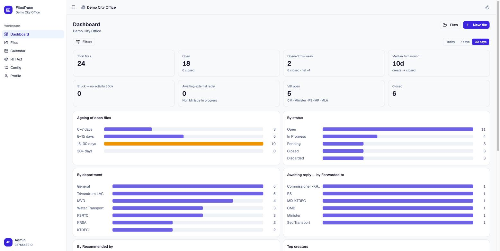
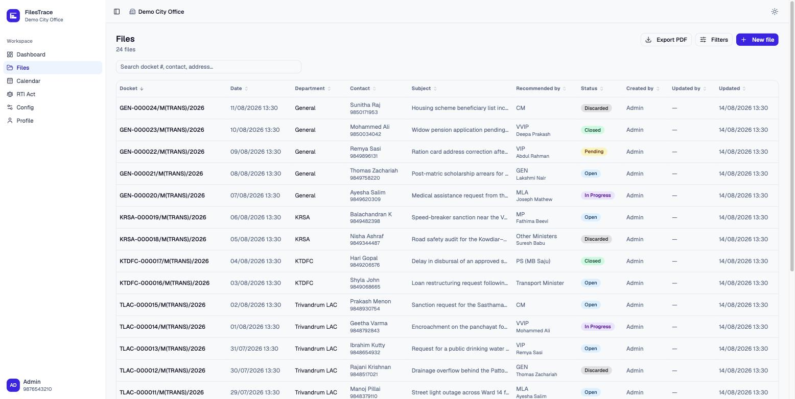
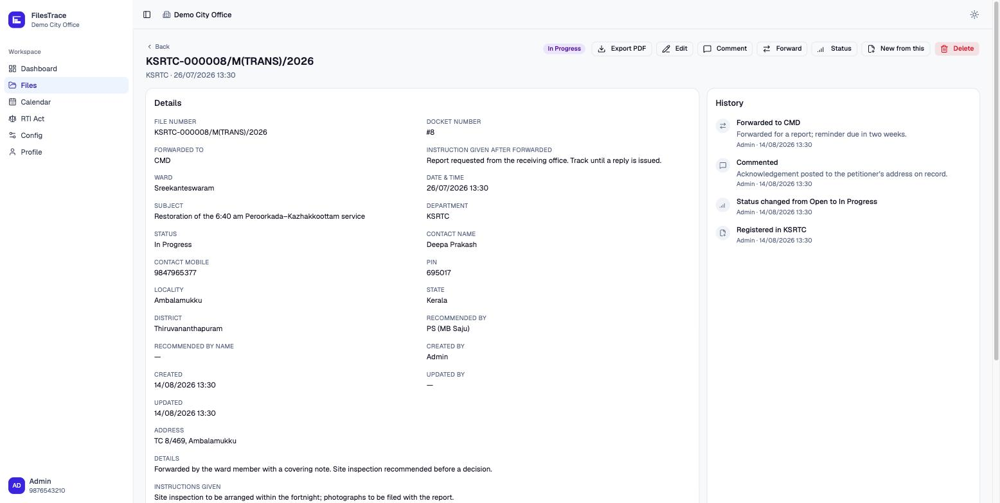
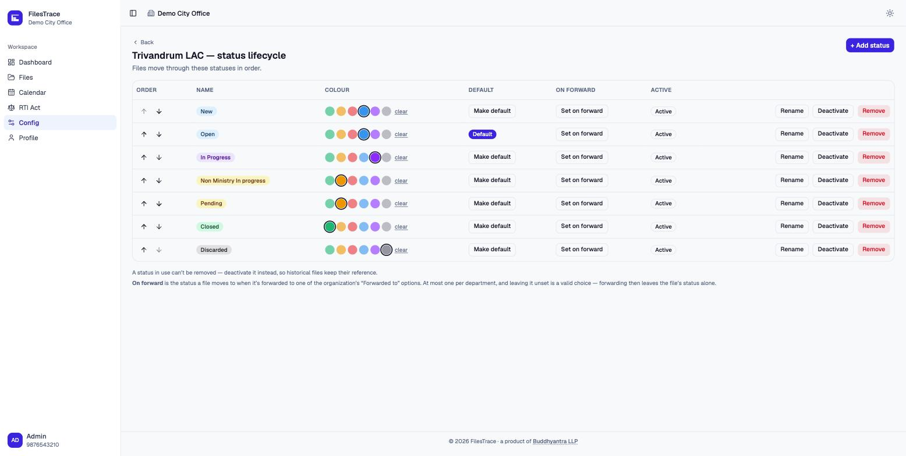
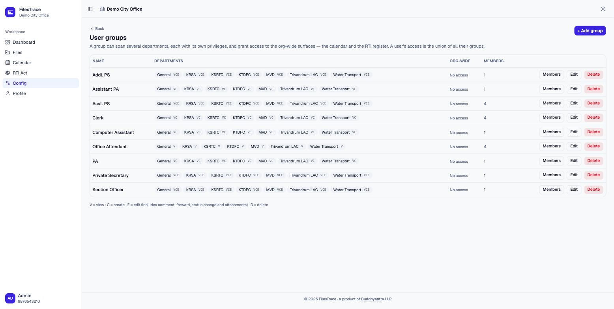
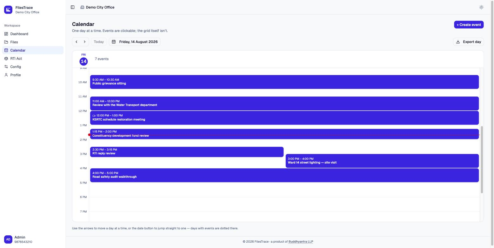
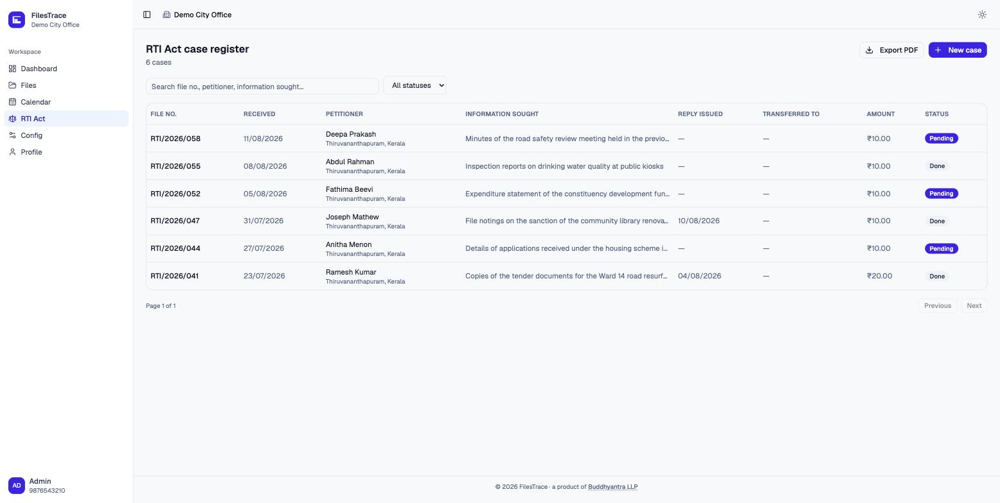

tenancy
One instance, many organisations
Each organisation owns its departments, its users and its files, and can’t see past its own boundary. People who genuinely belong to two get a switcher, not a second login.
Buddhyantra / Products / FilesTrace
Where is this file, what’s its status, and who did what to it?
FilesTrace is file tracking and status management for government departments and organisations that run on paperwork. Every file is filed under a department, moves through a status lifecycle you configure yourself, can be forwarded to another office, carries its attachments, and accumulates an append-only history of everything that happened to it. Ask the question at any hour and the answer is on the screen.

why it exists
Most offices already track files. In a register, in a spreadsheet, in the memory of the one clerk who has been there longest. It works until somebody is on leave, until two departments each think the other has it, until a petitioner rings to ask what happened and the honest answer is that nobody knows.
FilesTrace does not ask an office to change how it works. It records what it already does — accurately, in one place, with a history that cannot be quietly rewritten. Built and run by Buddhyantra.
the register
Each file gets a docket number the moment it is created — the one human-readable handle everyone in the office can say out loud. From there it is searchable by docket, contact, subject or address, and filterable by department, status, ward, date and who recommended it.
Names, addresses and subjects go in as typed — Malayalam, Hindi or English — and stay searchable in the script they were written in, because a register that quietly transliterates is a register you can’t find anything in.
The same filters drive the PDF export, so a printed list is always the list that was on the screen.

the record
Registered, commented, status changed, forwarded, attachment added — every event is appended to the file’s history with who did it and when. Nothing in the app edits or removes an entry.
That is the difference between a system that tells you where a file is and one that can tell you where it has been. When a decision is questioned six months later, the trail is the answer.

the AI
Most of what reaches an office does not arrive as a tidy form. It arrives as a two-minute WhatsApp voice note, a photographed application, a PDF someone forwarded. Attach any of it to a file and FilesTrace transcribes the audio and reads the documents — in the language they were actually recorded and written in, not translated into English first.
From that, the AI writes a plain summary of what the person is asking for, and proposes the entries a clerk would otherwise type by hand: which department it belongs to, the ward, the status to move it to, and the desk to forward it to.
Every proposal is a suggestion, not a decision. A clerk accepts or overrides each one, and either way the choice lands in the same append-only history as everything else — so a file is never quietly classified by a machine with nobody's name against it.
transcript · as spoken
വാർഡ് 12-ൽ പൈപ്പ് പൊട്ടി മൂന്ന് ദിവസമായി വെള്ളമില്ല. രണ്ട് തവണ ഓഫീസിൽ വിളിച്ചു.
“The pipe in ward 12 burst, no water for three days. I rang the office twice.”
summary & suggested actions
Burst water line in Ward 12, no supply for three days. Petitioner has called twice already. Two open files reference the same line.
the lifecycle
Departments are set up in the app, and each one carries its own status lifecycle, in its own order, with its own colours — and its own set of form fields, so a department that never needs a ward doesn’t see one.
A status that has been used can’t be deleted, only deactivated. Historical files keep pointing at the status they were actually in, which is the only version of the past worth keeping.

the permissions
Real offices don’t divide neatly into “admin” and “user”. A section officer sees four departments and can act in two of them; an attendant can look but not touch; a private secretary needs the shared diary and nothing else.
Groups span any number of departments, each with its own view / create / edit / delete rights, plus the same four for the calendar and the RTI register. A person’s access is the union of the groups they’re in.

the day
A shared day view for the appointments, site visits and review meetings the files generate — with the contact, the phone number, and a meeting link when it’s a video call. One day at a time, because that is how an office actually reads its own diary.
Any day exports to a PDF, which is still how most offices circulate a schedule.

the register beside the register
A statutory register with its own screen: file number, when the application arrived, who sent it, what was asked for, the fee realised, and the date a reply was issued. Pending and answered are the two states that matter, and the list makes it obvious which is which.
Filterable, searchable, and exportable to PDF in the shape an audit expects to receive it.

how it's built
Nothing here is clever for its own sake. An office that keeps its records in this should be able to keep them for a decade without an upgrade it didn’t ask for.
tenancy
Each organisation owns its departments, its users and its files, and can’t see past its own boundary. People who genuinely belong to two get a switcher, not a second login.
storage
Images, PDFs and audio attach to a file. Deleting one marks it deleted and keeps the record; the object itself is purged after a grace window, so an accident is recoverable and a deletion is real.
deployment
PostgreSQL and a single container. No queue to babysit, no cache to warm, no third-party service holding your records. It runs on a modest server and it runs offline of us.
paper
The file list, a single file, an RTI register and a calendar day all export. The export takes the same filters the screen applied — a printed list that quietly ignored one would misrepresent itself.
devices
Built for the phone in a pocket at a site visit as much as the desktop at the counter. The same screens, laid out for the device actually in hand.
handover
Set-up, migration of what you already hold, and training for the staff who will use it daily. If you later want it run somewhere else, it goes.
see it properly
The fastest way to judge FilesTrace is against your own paperwork. Tell us how your office files, forwards and closes things, and we’ll show you the same flow running in it.